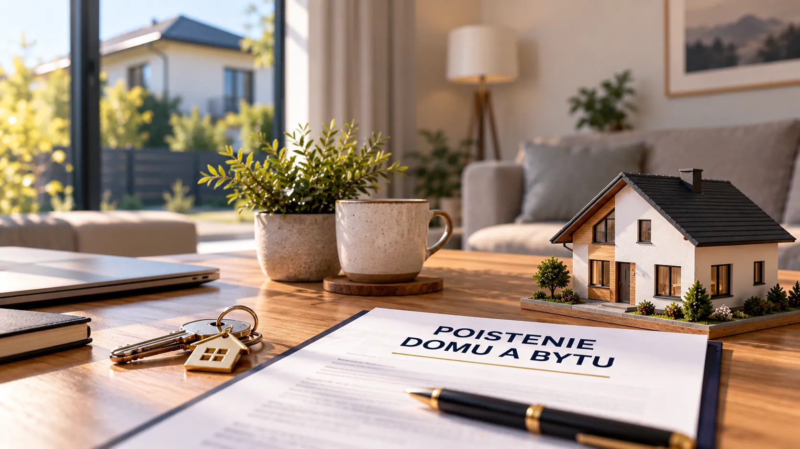

Kedy sa oplatí refinancovať hypotéku?
Nižší úrok ešte automaticky neznamená, že refinancovanie sa oplatí. Pozrieme sa na to, čo treba porovnať.
Čítať článok →Praktické informácie o hypotékach, poistení, investovaní a finančnom zabezpečení bez zbytočne komplikovaných výrazov.
Praktické témy, ktoré vám môžu pomôcť pri finančných rozhodnutiach.
Nižší úrok ešte automaticky neznamená, že refinancovanie sa oplatí. Pozrieme sa na to, čo treba porovnať.
Čítať článok →Poistenie môže byť drahé a pritom rodinu chrániť nedostatočne. Na čo si dať pozor?
Čítať článok →Cena nehnuteľnosti nie je jediný výdavok. Pozrieme sa na vlastné zdroje a ďalšie náklady.
Čítať článok →Aj menšia pravidelná suma môže počas rokov vytvoriť zaujímavý kapitál do začiatku života.
Čítať článok →Dva piliere, dva rôzne princípy. Jednoduché vysvetlenie bez finančného žargónu.
Čítať článok →
MajetokStaré poistné sumy a podpoistenie môžu pri škode znamenať nepríjemné prekvapenie.
Čítať článok →Pozrieme sa na hypotéku, poistenie alebo investície nezáväzne.
CHCEM NEZÁVÄZNÚ KONTROLU